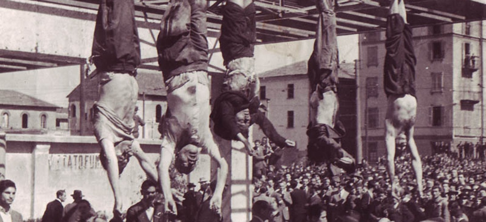

Vous vous ferez une vie nouvelle. Ne perdez plus de temps. Adieu Rachèle, adieu!
MUSSOLINI
Thành phố Rome hơn một tháng nay chịu những vụ mưa bom trở nên hoang tàn đổ nát.
Sáng, ngày 10 tháng 7, Mussolini đến Sette Vene, cách Rome 40 cây số, cùng với bộ tham mưu huy chương sáng rực trên áo đứng bên cạnh nhiều sĩ quan Đức quốc xã để xem « sư đoàn M » diễn hành. Đó là sư đoàn phòng vệ mang tên Mussolini viết tắt bằng chữ M hoa, có 32 chiến xa tối tân của Đức loại «Tigre», có những huấn luyện viên ưu tú của S.S.
Tướng Ambrosio vẻ mặt đầy tin tưởng, nói với lãnh tụ hãy gửi sư đoàn M tới chiến tuyến Sicile thử lửa cho đồng minh hiểu thế nào là sức mạnh fát xít. Chẳng biết hứng chí thế nào, Mussolini chấp thuận luôn đề nghị của tướng Ambrosio, quyết định tự đưa ông vào mạt lộ. Tuần lễ sau, do lệnh Mussolini, sư đoàn M được đặt dưới quyền chỉ huy của quân đội.
Grandi bây giờ đã theo hẳn phe âm mưu bắt Mussolini, tất cả chỉ còn chờ nhà vua gật đầu nữa là xong. Công chúa Marie José, hoàng tử Piemont mở rộng tiếp súc với các hàng tướng tá kéo họ vào cuộc âm mưu. Mọi người thỏa thuận cử thống chế Badoglio kế vị Mussolini. Nhưng nhà vua vẫn chưa chịu, trong khi tình thế hết sức cấp bách.
Phải đợi mãi tới ngày 15 tháng 7, Vua Victor Emmanuel III mới cho mời thống chế Badoglio và Bonomi tới dinh Savoia để nghe họ trình bày về một chính phủ đoàn kết (Le gouvernement d’ Union ) sau khi lật đổ chế độ Mussolini. Hôm ấy, nhà vua cũng được biết Grandi đã rủ thêm Ciano, Battai, Federzoni nhập cuộc.
Ngày 16 tháng 7, chừng 15 cán bộ trung ương đảng fát xít đến dinh Venezia yêu cầu Mussolini triệu tập đại hội đồng trung ương đảng. Mussolini ngờ vực nhìn họ nói: « Tôi sẽ triệu tập. Bên ngoài thiên hạ sẽ nói chúng ta hội hộp để bàn chuyện đầu hàng. Tuy nhiên, tôi vẫn sẽ triệu tập ».
Ngày 20 tháng 7, tướng Đức Rintelen sang Rome vào điện Venezia yêu cầu Mussolini trả lời trong vòng 2 ngày 3 điểm của đại tuớng Keitel, mà điểm quan trọng nhất là Đức quốc xã đòi đưa quân vào kiểm soát nước Ý. Tướng Ambrosio phản đối quyết liệt rồi lập tức xin từ chức. Còn Mussolini sau mấy giờ suy nghĩ chấp thuận.
Ngày 21, Farinacci lãnh tụ cánh fát xít thân Đức, gặp tướng Tintelen báo cáo đầy đủ tình hình nguy ngập của chính trị nội bộ Ý.
Ngày 22, Mussolini vào điện Quirinal, nhà vua chau mày bảo Mussolini: « Không thể nào kéo dài chiến tranh thêm nữa, tinh thần quân đội vỡ rồi. Đức quốc xã thế nào cũng phản bội Ý. Hãy cho Đức biết tình thế khốn khó của Ý để mà chọn đường lối chính trị mới kẻo không kịp ».
Khi Mussolini rời điện Quirinal, nhà vua nói với tướng Puntoni: « Hắn nhất định không chịu hiểu và chẳng muốn làm như thế, lời tôi đã trở thành cơn gió thoảng bên tai hắn ».
Phe âm mưu nhất quyết hành động ấn định giờ khỏi sự nhằm ngày 26 tháng 7. Grandi, Bottai, Federzoni, Albini hội với nhau thảo nhật lệnh.
Farinacci và Scorza báo cho Mussolini biết nhiều tin tức quan trọng về cuộc âm mưu của các tướng lãnh Grandi, Bottai với hỗ trợ của nhà vua chống lại Mussolini. Nhưng lãnh tụ cười sặc sụa bảo: « Các chú mày kể chuyện trinh thám cho ta nghe hay sao vậy? ».
Ông nhất định không tin. Rachèle lo sợ khuyên chồng nên bắt ngay bọn phản bội. Mussolini gạt đi.
Thứ bảy ngày 24 tháng 7, lúc 17 giờ 30, đại hội đồng trung ương sẽ họp tại dinh Venezia.
Hôm ấy, các ngã đường chung quanh dinh vắng teo vì cảnh sát đã dựng hàng rào cản từ xa.
Grandi tới đúng 17 giờ đã có một số người đến trước rồi. Dần dần các người khác tề tựu đông đủ. Họ là 28 vị cao cấp trung ương đảng fát xít. Ai nấy mặc bộ đại lễ mầu đen. Họ đứng chờ lãnh tụ.
Lúc 17 giờ 10, Mussolini bước vào. 28 người đứng lên giơ tay chào kiểu fát xít đồng thanh hô: « Saluto! Al Duce» đi bên cạnh Mussolini là Quinto Navarra, chánh văn phòng ôm cặp hồ sơ. Nét mặt Mussolini không vui, bằng một giọng chua chát, khô khan và kiêu ngạo, tay lật những trang giấy trong tập hồ sơ, ông duyệt xét lại toàn bộ tình hình chính trị, quân sự, phê phán gắt gao tướng lãnh quân đội. Cuối cùng, ông chỉ trích chủ trương của Grandi muốn ký hòa bình riêng rẽ với đồng minh có thể làm nguy hại tới sinh mệnh chính trị fát xít, ông cũng cho biết chỉ năm bảy ngày nữa, Đức quốc xã sẽ tung ra nhiều vũ khí bí mật có thể làm đảo lộn tình thế quân sợ hiện nay.
Mussolini ngồi xuống, ông vừa nói liền một hơi một tiếng 55 phút đồng hồ. Sau đó, cuộc thảo luận bắt đầu.
Thống chế De Bono biện hộ cho quân đội, Farinacci chồm dậy lên án bộ tổng tham mưu quân đội nhất là tướng Ambrosio, Bottai nêu câu hỏi hòa bình. Grandi đứng lên nói câu mở đầu: « Chính trị độc tài đã làm chúng ta thua trận, không phải lỗi chủ nghĩa fát xít cũng như không phải lỗi quân đội». Rồi ông đả kích Mussolini kịch liệt, vạch vòi những lỗi lầm của Starace và Scorza trong chức vụ cai quản đảng. Để kết thúc, Grandi nhắc lại lời Mussolini nói năm 1924: « Các đảng kể cả đảng fát xít của chúng ta nếu cần sẽ phải chết đi cho đất nước này sống ». Sau đó Grandi đọc bản nhật lệnh rõ ràng từng điểm mà điểm quan trọng nhất là nhân danh đại hội đồng trung ương đảng và thủ tướng chính phủ thỉnh cầu nhà vua trở lại nắm quyền tổng tư lệnh quân đội.
Nhìn thẳng vào bộ mặt bất mãn vì bị tước quyền tổng tư lệnh của Mussolini, Grandi nói: « Đồng chí tưởng mình là một nhà quân sự sao? Xin nhớ nước Ý sụp đổ kể từ giờ phút đồng chí đeo trên vai cái lon thống chế ».
Mussolini chỉ ngồi yên gật gật cái đầu. Bottai, Ciano ủng hộ Grandi trình bày trước hội đồng những hành động của Đức quốc xã đối với Ý. Farinacci hò hét bênh vực Đức quốc xã.
Nửa đêm, Mussolini đề nghị dời đến hôm sau, Granđi không chịu. Mussolini nhượng bộ, cuộc thảo luận nghỉ 15 phút rồi sẽ tiếp tục.
Scorza, Buffarini, Alfieri, Galbiati đi với Mussolini ra khỏi phòng họp. Granđi ở lại thuyết phục những người còn giữ thái độ do dự.
Buffarini nói với Mussolini: « Hãy bắt hết chúng ngay, đấy là một âm mưu nguy hiểm ».
Mussolini chỉ nhún vai không nói gì, ông tin vào nhà vua vẫn ủng hộ ông, ông tin Grandi nếu bỏ phiếu hắn chỉ là thiểu số, ông tin hiện tại chẳng ai đủ uy tín để lãnh đạo nước Ý cho nên ông không nghe lời Buffarini. Đầu óc Buffarini như đàn bà khác gì nỗi lo lắng hão huyền của Rachèle.
Thảo luận tiếp tục lúc 12 giờ 15 đêm. Bastianini đứng sang phe Grandi lên tiếng chỉ trích lãnh tụ Mussolini nói: « Tôi nay đã 60 tuổi rồi, trong quá khứ tôi có 20 năm dài cho một cuộc phiêu lưu thích thú. Tôi sẵn sàng chấm dứt nó, nhưng tôi không thể làm được vì nhà vua và dân chúng vẫn còn tin cậy nơi tôi. Ngày mai đất nước này sẽ ra sao nếu đêm nay tất cả mọi người ở đây chống lại tôi? »..
Tướng Galbiati và Tringali Casanova ủng hộ Mussolini. Hai ông gào lên: « Các anh sẽ mất đầu do sự phản bội này ». Galbiati dọa sẽ gọi đoàn phòng vệ vào bắt hết. '
Thấy tình thế gay gắt, Grandi dịu giọng hướng về phía Mussolini nói: « Duce! Chúng tôi bao giờ cũng vẫn theo ông vì ông là lãnh tụ của chúng tôi, ông là người tài giỏi hơn hết trong chúng ta. Xin ông hãy vứt bỏ bộ quân phục dấu hiệu con ó để trở về mặc chiếc áo sơ mi đen của cách mạng ».
Mussolini thở dài ngao ngán bảo Scorza sửa soạn cho phiếu lấy đa số quyết định bản nhật lệnh của Dino Grandi. Phòng hội bỗng im phăng phắc. Scorza đọc kết quả, Grandi được 19 phiếu thuận, 7 phiếu chống và 1 phiếu trắng.
Mussolini giận xanh mặt đứng dậy tay nắm thành hai nắm đấm đặt trên bàn nhưng vẫn chưa hết vẻ mệt mỏi. Ông bảo Grandi: «Chính bạn là người gây ra khủng hoảng cho chế độ ». Rồi ông rời phòng họp.
Scorza định hô mọi người chào theo truyền thống fát xít. Mussolini ra hiệu bảo đừng chào.
Tringali, Casanova đến bên Ciano nói: « Chú mày chắc sẽ phải trả bằng máu các việc làm chiều nay ».
Mọi người lần lượt ra về, ai nấy ngạc nhiên không hiểu tại sao mình chưa bị bắt.
Vài tháng sau, Mussolini nói với Marinetti giải thích thái độ nhu nhược kỳ lạ hôm đó:
«Chỉ có bạn hiểu được tôi thôi vì bạn đã rõ cơn bệnh của chúng ta đau đớn nhường nào. Ngay đêm 24, bao tử tôi bỗng nhức nhối ghê gớm. Nó hành tôi 2 tiếng đồng hồ trước khi đại hội đồng nhóm họp. Tội nói như người mất hơi và tâm thần lơ
đảng. Tôi càng thấy cơ thể khó chịu hơn dưới ánh đèn chói chan thành thử tôi cứ phải luôn luôn che tay lên mắt. Sau khi đưa lập luận của tôi để mở đầu cuộc thảo luận, tôi ngồi xuống với cảm tưởng như đứng trước một phiên xử án mà mình vừa là tội nhân lại vửa là kẻ tới luận tội. Đầu óc tôi vẫn sáng suốt, tôi nghe rõ tất cả những lời Grandi đả kích nhưng sức lực tôi đột nhiên tiêu tan đi đâu mất. Bạn từng đau như vậy và bạn biết cái đau ấy khiến ta kiệt sức ra sao chứ? »
Điều Mussolini nói với Marinetti là sự thật không phải ông tìm cớ che đậy vì có một nhân chứng là Buffarini kể lại rằng: «Tôi trông rõ Mussolini hôm ấy, ông ta hệt như hình ảnh của César ngày xưa đưa tay áo lên che đỡ khi những nhát đao của nhóm âm mưu đâm tới tấp vào người ».
Rachèle chờ Mussolini suốt cả đêm thao thức lo âu, khi chồng vừa bước chân vào, bà đã hỏi ngay:
« Ông đã cho bắt nhốt hết chúng chưa? »
- Chưa, nhưng tôi sẽ cho bắt.
Bộ dạng tiều tụy, Mussolini lên giường nằm lòng nặng trĩu buồn phiền.
Còn Grandi ở phòng hội ra đến thẳng nhà quận công Acquarone, bổ trưởng hoàng gia, rủ ông này tới gặp hầu tước Zamboni rồi kể cho họ nghe tất cả những diễn tiến cuộc thảo luận vừa qua. Kể xong quay sang phần chính trị, Grandi đưa ý kiến vua nên chọn thống chế Caviglia làm thủ tướng chính phủ đoàn kết. Grandi xin giữ sứ mạng thương thuyết với Đồng minh. Acquarone cho biết nhà vua đã chọn thống chế Badoglio rồi. Bấy giờ Grandi mới hiểu rằng vua Victor Emmanuel cũng có một kế hoạch hành động riêng.
Tám giờ sáng, Mussolini đã có mặt tại bàn giấy tiếp tướng Balbiati đến để đề nghị bắt hết 19 người đã ký vào nhật lệnh của Grandi. Mussolini từ chối nói:
« Lát nữa tôi vào gặp nhà vua, bàn tính với ngài xem sao đã ».
Lúc nói chuyện cùng đại sứ Nhật Bản thì Mussolini nhận được bức điện văn của Bá Linh báo tin Goering sẽ tới Rome để ăn mừng sinh nhật Mussolini nhằm ngày 29 tháng 7.
Ngày 25 tháng 7 hồi 10 giờ 30, tại dinh Savoia, tướng Puntoni vào gặp nhà vua. Vua Victor Emmanuel cho biết đã quyết định cất quyền Mussolini dự tính vào thứ hai 26 tháng 7. Lúc 12 giờ 15, thư ký của Mussolini gọi điện thoại tới xin nhà vua cho Mussolini gặp sớm thay vì thứ hai thì gặp ngay chiều chủ nhật hồi 17 giờ. Như vậy, mọi kế hoạch phải chuẩn bị sớm hơn 24 tiếng. Sau mấy phút do dự, nhà vua và quận công Acquarone trả lời chấp thuận.
Các tướng Castellano, Cerica, Ambrosio, Carboni họp với Acquarone duyệt xét lại các điểm trong kế hoạch như: chiếm ngay các trung tâm điện thoại, các phủ bộ, đài phát thanh,vô hiệu hóa lực lượng chí nguyện fát xít. Nhà vua không đưa ra đề nghị bắt giam Mussolini nhưng ông phản đổi việc này. Còn các tướng lãnh cùng nhau quyết định bắt ngay Mussolini tại dinh Savoia, ban đầu nhà vua bảo đừng nên bắt hắn trong dinh mà nên làm ở ngoài, ông không muốn chứng kiến vụ đó. Nhưng sau khi nghe tướng lãnh trình bày nhu cầu kỹ thuật buộc phải vậy thì nhà vua chỉ chấp thuận bằng cái gật đầu nhẹ chứ không nói gì.
Lúc 3 giờ chiều, nhà vua cho gọi tướng Puntoni bảo: « Tôi không thể ước đoàn nỗi những phản ứng của Mussolini, ông hãy ở lại đây, nếu cần thì can thiệp ».
Cùng lúc 3 giờ chiều, Mussolini đi với tướng Galbiati đảo quanh thành phố Rome thăm thú tình hình.
Trên xe, Galbiati hỏi: « Tình thế này ông nói chuyện với nhà vua làm gì nữa? »
Mussolini đáp: « Trong gần 20 năm nay, tôi chưa làm gì mà không cho nhà vua biết hoặc không cố sự thỏa thuận của ông ta từ quốc sự đến việc riêng tư. Tôi chắc nhà vua vẫn luôn luôn đồng ý với tội ».
Về nhà Mussolini còn dặn với theo Galbiati chớ nên hành động quá sớm để hư hết việc.
Vào phòng ăn Mussolini bảo Rachèle: « Chiều hay tôi sẽ vào gặp nhà vua ». Đàn bà thường có linh tính bén nhậy nên vừa nghe dứt câu, Rachèle lo sợ khẩn khoản nói với chồng: « Tôi xin ông đừng đi tới đó, đừng đi tới đó», Mussolini lặng thinh.
Trong lúc hai vợ chồng dùng cơm trưa, ba lần có chuông điện thoại reo, nhân danh bộ nghi lễ của hoàng cung nhắc đi nhắc lại lời yêu cầu Mussolini không mặc quân phục trong buổi hội kiến chiều nay.
Cơm xong thì viên bí thư của Mussolini là De Cesare vừa tới. Rachèle nói riêng với Cesare: « Tôi ngại quá chú ơi, tôi có cảm tưởng là chiều nay nhà tôi không về nữa đâu »..
De Cesare nói: « Làm chi mà xảy ra chuyện như thế được »!
Trước khi Rachèle ôm chặt lấy chồng thật lâu, bà còn nhìn theo xe mãi mãi.
Lúc 5 giờ kém 10, xe Mussolini đi vào cổng chính của tòa lâu đài hoàng gia, ông bựớc xuống đằng sau là De Cesare, ông chợt nhìn thấy hôm nay quân canh gác có vẻ nghiêm mật hơn, tuy nhiên, chẳng có gì là khác lạ lắm. Đức vua trong bộ võ phục thống chế, đứng ngay trên thềm để đón Mussolini. Rồi họ đi thẳng tới phòng khách.
Cuộc đàm thoại hôm nay mang vẻ « trầm trọng » hơn hẳn các lần trước. Mussolini trình bày cho nhà vua tình hình quân sự, kể lại vụ đại hội đồng trung ương đảng fát xít đếnchuyện bỏ phiếu đa số ủng hộ nhật lệnh của Grandi, Mussolini cho rằng vụ ấy chẳng đáng kể vì nó là việc đảng không dính gì đến hiến pháp quốc gia.
Mussolini cố làm vẻ bình tĩnh nhưng tay ông vẫn run run mỗi lẫn đưa cho nhà vua những tài liệu quốc sự. Sau đó, tới lượt nhà vua cho. Mussolini biết rằng:
« Không thể cứ tiếp tục thế này mãi được, quân sĩ đã chán ghét chiến tranh, chán ghét Mussolini lắm rồi ».
Để kết luận, nhà vua nói thẳng vào để khuyên Mussolini nên từ chức, nhà vua đã chỉ định thống chế Badoglio lập nội các mới. Mussolini muôn nói quyết định ấy sẽ đưa đến những hậu quả tai hại thì nhà vua liền cắt ngang lời ông bảo:
«Tôi rất buồn vì không có giải pháp nào khác».
Nhà vua tiễn chân Mussolini ra tận cửa, khi bắt fay Mussolini, tay nhà vua nóng ran ( lời Mussolini kể trong hồi ký).
Bên ngoài, giữa khi vua và lãnh tụ fát xít ngồi nói chuyện, tài xế của Mussolini bỗng thấy có người gọi vào nghe điện thoại, hắn ta ngay tính chạy vào thì bị bịt miệng trói luôn. Một chiếc xe bít bùng đậu sẵn vừa đúng chỗ để nạn nhân bước lên mà không gây nhiều chú ý.
Khi Mussolini và De Cesare vừa xuống hết bực thềm, có hai sĩ quan cảnh sát mặc sắc phục (Carabinieri) tiến đến bên cạnh nói: « Thưa ngài, đức vuara lệnh cho chúng tôi phải bảo vệ ngài ».
Mussolini vẫn còn chưa tĩnh ngộ nói: « Điều ấy đâu có cần », rồi ông săm săm đi tới chỗ xe ông đậu. Hai sĩ quan cảnh sàt Iiền dõng dạc bảo: « Ngài bị bắt giữ rồi vậy xin ngài hãy lên xe của chúng tôi ».
Mussolini lặng thinh ngoan ngoãn bước lên phía sau chiếc xe bít bùng, cả De Cesare nữa. Bên trong, ba cảnh sát sắc phục, tay cầm tiểu liên ngồi chực từ bao
giờ. Cửa xe sập kín bưng, chạy như bay qua các phố vắng.
Vài tiếng đồng hồ sau, xe bít bùng dừng lại. Nơi đây là trại cảnh sát ở Trastevere. Mussolini bị đưa vào một phòng kín canh phòng cẩn mật. Mussolini từ chối không ăn uống.
SAU KHI MUSSOLINI BỊ BẮT
Sẩm tối, không khí Rome ngột ngạt những tin đồn, các quán cà phê đầy người tụ tập, thì thầm.
Đêm đến thành phố tối đen chìm trong im lặng.
Lúc 22 giờ 45, đài phát thanh đang ở chương trình nhạc nhẹ, bỗng cúp ngang, thay vào nhạc là giọng nói quen thuộc của Giambattista Arista mà dân chúng thường được nghe trong những dịp đại lễ hay những khi có biến chuyển lớn. Arista nói: «Hoàng thượng vừa chấp nhận đơn xin từ chức của thủ tướng Benito Mussolini và đã chỉ định thống chế Pietro Badoglio lập nội các mới ».
Sau đó, Arista đọc hai lời tuyên cáo, một của Đức vua nói từ nay ngài đảm nhiệm quyền tổng tư lệnh quân đội, tất cả mọi hành động bất tuân trảá đường lối hay phản đối đều bị trừng phạt. Tuyên cáo của thống chế Badoglio nói: «Chiến tranh vẫn tiếp tục. Ý vẫn ở bên cạnh Đức quốc».
Lời Arista vừa dứt thì dân chúng ùa ra đường reo hò sắp hết chiến tranh, sắp hòa bình. Tại các xóm bình dân, nhiều trụ sở fát xít bị tấn công, tượng Mussolini bị đập phá, ảnh Mussolini bị xé nát. Những tiếng hò hét: «A mort Mussolini! Đả đảo fát xít! Eviva il Rè (Hoan hô quân dội!) vang dậy.
Chân người chạy rầm rầm xen lẫn với còi xe, thiên hạ tìm bắt tổng thư ký đảng fát xít Carlo Scorza nhưng hắn đã biệt dạng rồi.
Farinacci và Pavolini xin tị nạn chính trị trong tòa đại sứ Đức.
Grandi, Bottai, Ciano trước cơn giận dữ của dân chúng cũng trốn mất. Họ đều tuyệt vọng, họ không ngờ có chuyện bắt giữ Mussolini. Âm mưu của họ nay có một âm mưu khác đi kèm bên cạnh. Ciano kêu trời: «Khốn nạn chưa, thế là tiêu tan hết. Bây giờ đến lượt chúng ta phải đưa tay vào còng. »
Grandi vò đầu bứt tai:
«Cần gì phải làm thế, vô chính trị, vô chính trị»!
Không một người nào đã đứng lên bênh vực Mussolini và chế độ. Tướng Balbiati ngoan ngoãn giao quyền tư lệnh đạo quân phòng vệ của đảng cho quân đội. Scorza, sư đoàn M, các tỉnh trưởng lục tục qui thuận nhà vua. Đụng độ giữa fát xít và dân chúng ở khắp nơi chỉ gây bị thương chứ không ai bị chết.
Nạn nhân duy nhất của biến cố 25 tháng 7 là thượng nghị sĩ Morgagni, bạn thân Mussolini, giám đốc hảng thông tấn Stefani. Khi hay tin Mussolini bị bắt, Morgagni bắn vào thái dương tự sát sau khi vìết mấy chữ:
«Mussolini đã từ chức. Đời ta thế là hết. Vạn tuế Mussolini!
Morgagni là người bạn đường chính trị của Mussolini từ lâu.
Ngày 26 tháng 7 vui như một ngày hội, sáng sớm xe cộ và người đã đông, đi lại nườm nượp. Trước cửa dinh Venezia, dân tụ tập như kiến, bọn thanh niên leo lên hàng rào cổng hò nhau giựt bảng hiệu cây búa bó củi quăng xuống đất.
Milan, Turin và nhiều nơi khác, người ta đều thấy cùng một quang cảnh. Ảnh dân biểu Mattẻotti ; được giơ cao trong đám biểu tình. Trụ sở phân bộ fát xít ở Turin bị phá tan tành, hàng ngàn thợ thuyền xông vào các trại giam thả hết tù chính trị. Dân chúng reo lên: «Bọn fát xít đã bị lật đồ! Hoan hô quân đội»!.
Nhưng chỉ một ngày reo mừng thôi.
Ngay buổi chiều tại lâu đài Torino, quân đội đã bắn vào đám người biểu tình. Ở Milan, lệnh giới nghiêm được thi hành gấp rút, hai đại đội binh sĩ đi theo một chiến xa lưỡi lê cắm trên đầu súng xông tới giải tán một cuộc mít tinh. Ở Rome, nhân viên công lực đã bắt đun làm mạnh.
Luật sư Galimberti, một trong những thủ lãnh đảng Hành Động, diễn thuyết trước hàng ngàn người, ông nói: «Chiến tranh tiếp tục nhưng phải là cuộc chiến tranh chống bọn Đức quốc xã. Muốn thế, dân chúng phải nổi dậy»
Galimberti bị nhà cầm quyền mới coi như phần tử nguy hiểm.
Toàn quốc giới nghiêm sau 21 giờ 30, mọi hình thức tụ họp đều bị cấm. Tướng Roatta ra thông tư cho toàn thể quân đội như sau:
«Trước những cuộc biểu tình, quân đội đều phải sẵn sàng súng ống kể cả súng cối như đứng trước quân thù. Không bắn chỉ thiên mà sẽ bắn thẳng như một trận chiến. (En cas de manifestations, il faut procéder en face de la population comme contre l‘ennemi, avee mortiers artillerie. Que l‘on ne tire jamais en l’air mais pour atteindre, comme dans le combat).
Ngày 28 tháng 7 đã có 23 nạn nhâm chết và 70 bị thương. Những biến cố này thật dễ hiểu, vì đức vua và đa số tướng lãnh quân đội mười mấy năm trời dàng buộc với fát xít tất nhiên họ phải sợ có thể bị tràn ngập rồi bị cuốn theo tình trạng tan vỡ. Họ cần giữ uy thế trấn áp. Bên cạnh họ là những lực lượng chính trị bảo thủ e ngại sự tràn lấn của phe tả. Cả chục tổ chức chống fát xít dấy lên.
Bonomi gặp thống chế Badoglio, nhân danh sáu chính đãng: Dân chủ, Thiên Chúa giáo, xã hội, hành động, cộng sản v.v... yêu cầu chấm dứt chiến tranh, cắt đứt mọi liên hệ với Đức quốc xã.
Thống chế Badoglio chÌ trả lời vắn tắt: « Chiến tranh tiếp tục».
Ngày 28 tháng 7, đảng fát xít, hội đồng trung ương đảng, tòa án đặc biệt, những hợp tác xã fát xít đều bị giải tán.
Mussolini trong chỗ giam giữ không có một hành động chống đối dữ dằn nào cả, ông nói chuyện với bất cứ ai, người lính gác hay vị bác sĩ triết lý hời hợt về dân tộc Ý, rồi đi ngủ.
Lúc 1 giờ sáng ngày 27 tháng 7, tướng Ferone đánh thức Mussolini dậy trao cho ông bức thư của thống chế Badoglio như sau:
«Gửi ngài Benito Mussolini,
Tôi là thủ tướng chính phủ, xin thưa lại để ngài rõ tất cả những biện pháp mà chúng tôi hiện áp dụng đối với ngài đều là vì lợi ích cá nhân ngài. Tôi cũng rất ân hận báo thêm một tin khác, là chúng tôi đang sửa soạn đưa ngài đến nơi nào tùy ngài chọn».
Xem xong, Mussolini viết vào tờ giấy trả lời Badoglio:
a) Tôi rất cảm ơn thống chế đã có những sự săn sóc quá chu đáo đối với cá nhân tôi.
b) Nơi duy nhất mà tôi muốn ở là Rocca della Caminate và mong được tới đó ngay.
c) Tôi xin xác định với thống chế, tôi vẫn nhớ những ngày chúng ta cộng tác cùng nhau, phần tôi, tôi không gây khó dễ gì cho thống chế, trái lại còn vui lòng cộng tác.
d) Tôi rất sung sướng hay tin quyết định của chính phủ vẫn tiếp tục chiến tranh. Tôi thành thật chúc thống chế thành công trong xứ mạng mà Đức Vua giao phó, đức vua mà tôi đã phụng sự 21 năm nay, cả bây giờ nữa tôi vẫn trung thành với người.
Mussolini ký tên mình xong, bên dưới còn viết thêm « Nước Ý muôn năm ».
Lời lẽ của lá thư chứng tỏ ông đã bó tay chịu hàng, từ bỏ hết mọi tham vọng. Nó có phần nào khôn ngoan nhưng vẫn không che dấu nổi trạng thái mệt mỏi, mất khí thế, nó chỉ mong được nhẹ gánh trước một hoàn cảnh vướng vít.
Chiều ngày 27, Mussolini bị giải đến nhà tù Gaète trên đảo Ponza nơi Mussolini dùng làm chỗ giam bọn chống fát xít. Trên con tầu đưa ông đi đảo, Mussolini nói rất nhiều với hạm trưởng Maugeri, trách Badoglio phản bội lời hứa nên mới đầy ông ra đây.
Ngày 29 tháng 7, Mussolini ăn sinh nhật mình trên hòn đảo lưu đầy. Hôm ấy ông gặp cựu dân biểu Zamboni, người từng âm mưu ám sát ông nên đã bị ông giam ngoài này.
Ngoài đảo, Mussolini say mê đọc «Cuộc đời chúa Jésus » của Ricciolti. Tất cả điều ông nghĩ hay ông định làm bây giờ đều quay về quá khứ, giải thích tự biện hộ cho những gì ông đã làm. Cô quạnh, ông tự ví minh như Nã Phá Luân trên Saint Hélène.
Ngày 7 tháng 8 năm 1943, Mussolini bị đưa qua đảo Maddalena gần Sardaigne, ở đây ông nhận được quà tặng của Hitter 24 cuốn toàn tập tác phẩm của nhà triết học Nietzsche đóng rất đẹp.
Biện pháp cảnh cáo đầu tiên của Đức đối với Ý là cúp không tiếp tế than. Than hạn chế, ngoài đường phố chỗ nào cũng có hàng dẫy người xếp hàng dài để mua một hai kí lộ than, hay bánh mì, rau cỏ. Lòng nhiệt thành trông đợi chính phủ Badoglio chưa mấy ngày đã nguội lạnh.
Bom « khủng bố » của không lực đồng minh vẫn rơi đều trên các đô thị Milan, Turin, Rome, Gênes, Bologne. Báo chí đầy những trang bình luận công kích cuộc chiến tranh vô nghĩa.
Ngày 17 tháng 8, chính phủ Badoglio ban bố lệnh điều tra, tịch thu tài sản của những cán bộ cao cấp fát xít và gia đình họ nếu có dính líu đến những chuyện lợi dụng quyền thế.
Lần lượt Starace, Bottai, Buffarini, Pollastrini, Biccardi, De Cesare, tướng Soddu, tướng Gabbiati, tướng Terruzzi, thống chế Cavallero đều bị bắt. Chỉ có Muti cựu
tổng thư ký đảng bị bắn chết vì toan trốn chạy. Badoglio cử tướng Carboni phụ trách việc «chém rắn chém đầu» fát xít. Gia đình Claretta Pétacci cũng cùng chung một số phận, chỉ riêng một mình Marcello Pétacci thoát, còn tất cả đi vào nhà tù ở Novare, một lâu đài cổ kính. Khi đến lục soát nhà Claretta, chính quyền mới bắt được khá nhiều thư từ của lãnh tụ fát.xít gửi cho người yêu viết toàn những lời nồng nàn thương yêu.
Gia đình Ciano định trốn qua Tây Ban Nha, nhưng đại tá Dollmann được lệnh của Himmler tìm cách thuyết phục cho Ciano hãy sang Đức trước rồi từ Đức đi Tây Ban Nha dễ dàng hơn. Ciano nghe lời, đút chân vào cái bẫy của Gestapo.
Sự bắt bớ quá trớn tưởng để củng cố chính quyền đã thành kết quả trái ngược, chính phủ Badoglio đã gây nhiều khó khăn bất lợi cho mình.
Bẳng 20 năm chính quyền, lực lượng fát xít có nhiều liên hệ dăng mắc như tơ nhện không thể sớm chiều quét sạch hết. Rút dây động rừng, chính nhà vua là người đầu tiên đưa fát xít vào chính quyền nếu đẩy mạnh công việc chống fát xít đến một cao độ nào đó có nghĩa là đổ hết tội lên đầu nhà vua. Do đó, trong hội nghị, tướng Puntoni đã lên tiếng phê bình thống chế Badoglio: «Chính phủ đang lao đầu vào việc bắt bớ vô ích». Rồi đến nhà vua gửi văn thư bảo:
« Yêu cầu hãy ngừng ngay tất cả mọi hoạt động nhằm xóa bỏ sinh mệnh chính trị của những người fát xít.
Mặt khác, chính phủ Badoglio lại phải đối phó với công nhân, khi chưa có chính sách rõ rệt thì Badogliỉo cho đặt súng liên thanh ngay trong các nhà máy. Tại nhà máy Fiat, hơn 50 công nhân bị đưa ra tòa án quân sự, nhiều binh sĩ và sĩ quan được tưởng thưởng vì đã xã súng bắn vào đám thợ thuyền nỗi loạn.
Mặt khác nữa là việc bang giao với Đức quốc xã. Chính quyền mới đứng kẹt giữa hai khuynh hướng. Một đòi hòa bình ngay, kêu gọi dân chúng nổi dậy chống Đức. Một bảo nên khôn khéo sợ Đức làm mạnh. Nhà vua là người sợ Đức quốc xã nhất, ông không muốn đời mình sẽ như vua nước Bỉ, cho nên nhà vua đã cho sắp xếp kỹ càng trong trường hợp phải trốn khỏi Rome đi lưu vong. Việc Hitler cử đặc sứ Rudolf Rahn qua Rome, Rahn là chuyên viên về các nước bị chiếm đóng, lại càng làm tăng sự lo sợ của nhà vua hơn lên.
MỘT NGƯỜI TÊN SKORZENY
Chế độ fát xít, bị lật đổ với Hitler có nghĩa là Ý sẽ trở mặt chống Đức và bắt tay Anh Mỹ.
Lật đổ fát xít theo thống chế Badoglio có thể đưa tới cái họa Đức quốc xã sẽ đem quân váo xâm chiếm nước Ý để chặn không cho Ý trở mặt.
Cả hai người đều phải tranh thủ thời gian nhưng cũng lại phải khôn khéo không gây kinh động Badoglio khi tuyên bố chiến tranh tiếp tục để Đức khỏi ra tay, Hitler không tỏ vẻ giận dữ lắm về vụ Mussolini để Badoglio khỏi chạy vội sang phe đồng minh.
Sáng sớm ngày 27 tháng 7, Hitler cho gọi đại tá chỉ huy đoàn « com măng đô » đến gặp ông. Đại tá tên Otto Skorzeny được quốc trưởng giao cho công tác tìm cách giải cứu Mussolini.
Tối ngày 27, hai sư đoàn S.S. âm thầm tập trung ở biên giới Brenner, sứ mạng của họ: chiếm Rome, tái lập chế độ fát xít.
Chính sách đối với Ý sẽ làm theo bốn kế hoạch: kế hoạch một mang tên Eiche có nhiệm vụ cứu Mussolini ; kế hoạch hai mang tên Student có nhiệm vụ chiếm cứ Rome đưa đảng fát xít trở lại chính quyền ; kế hoạch ba mang tên Schwarz có nhiệm vụ chiếm bằng quân sự toàn bộ nước Ý ; kế hoạch bốn mang tên Achse có nhiệm vụ tìm bắt hoặc phá hủy hạm đội của hải quân Ý.
Ngay tuần lễ đầu của tháng 8, 7 sư đoàn quân Đức quốc xã đã hoàn thành kế hoạch Schwarz, các nhà ga, đường hầm, trung tâm thủy điện đều do quân Đức bảo vệ, quân Đức mua bán trên đất Ý đều trả bằng «mác»(mark) của Đức gọi là đồng «mác» của quân đội chiếm đóng (marks d‘occupation).
Ngày 8 tháng 8, đại tá Otto Skorzeny bay lên đỉnh núi Gransasse, nơi mà tin tức tình báo cho biết là chỗ giam mới nhốt vì cứ năm ba ngày Chính phủ Badoglio lại dấu Mussolini đi một nơi khác.
Cùng ngày 8 tháng 8, đài phát thanh Ý loan tin chính phủ Badogilo xin đầu hàng đồng minh vô điều kiện sau khi có cuộc gặp gỡ bí mật của tướng Castellano với đại sứ Anh Hoare bên Tây Ban Nha.
Dân chúng Ý và Âu Châu nghe rõ ràng giọng nói run run của vị thống chế già đọc tuyên cáo xin hàng:
«Chính phủ Ý nhìn nhận không thể tiếp tục cuộc chiến đấu mà lực lượng đôi bên quá chênh lệch nện xin với đại tướng Eisenhower cho ngừng bắn. Điều thỉnh cầu này đã được chấp thuận.
«Mọi hành động của quân đội Ý nhằm chống lại quân Anh Mỹ đều phải ngưng tức khắc. »
Trên Gransasso, Mussolini ngồi lặng nghe tuyên cáo đầu hàng không nói một lời nào.
Khắp các ngả đường thành phố, người người gặp nhau hoan hô hòa bình, binh sĩ ôm nhau hát rồi chạy đến giật mũ cảnh sát tung lên trời.
Vào nửa đêm, dân chúng ở Rome nghe thấy nhiều tiếng súng đại bác nổ rất gần. Quân quốc xã đã ra tay dùng sức mạnh tước khí giới quân Ý ở bất cứ chỗ nào.
Năm giờ sáng, toàn thể hoàng gia và thống chế Badoglio rời bỏ Rome chạy trốn. Trên đường đi, thống chế thúc dục mọi người: « Nếu bọn nó tóm được chúng ta, bọn nó sẽ chém đầu hết».
Đức vua bình tĩnh hơn, nhưng ngài lại cáu tiết khi nhìn thấy khá đông sĩ quan cao cấp bỏ chạy theo ngài. Tướng Roatta ăn mặc dân sự vác trên vai khẩu tiểu liên khiến nhà vua chán ngán lắc đầu thở dài.
Vua đến lánh nạn ở Brindisi cách chỗ chiếm đóng của quân Đức khá xa, tiếp tục lãnh đạo công cuộc kháng chiến chống Đức, chống fát xít. Nhờ thế, hạm đội Ý không rơi vào Đức, kéo về vịnh Malte theo lệnh vua.
Nhưng trên bộ, sự ra đi đột ngột của nhà vua và thủ tướng chính phủ, chính quyền bỏ trống, quân đội Ý đổ sụp trong một vài giờ đồng hồ. Quân đoàn 4 đang trú đóng ở miền Nam nước Pháp tự ý bỏ chạy. Chỉ nghe thấy kêu đùa «Y Tedeshi » (quân Đức tới) cũng đủ làm cho các sĩ quan Ý sám xanh mặt. Nhiều kho lương thực của quân đội bị dân chúng xống vào cướp phá. Chỉ cần 10 quân quốc xã là thừa đủ để tước khí giới của cả một trung đoàn Ý. Đức bắt quân sĩ Ý lên xe lửa, ngoài mỗi toa kẻ chữ vôi trắng « Badoglio Truppen» (Lũ Badoglio phản bội), đưa về Đức cho làm lao công.
Vài nơi khác, mỗi ngày thường có xe đi kêu gọi người Ý hãy mang súng ra nộp cho quân chiếm đóng. Các đảng phái liên kết nhau lập mặt trận thống nhất để vũ trang đấu tranh với bọn quốc xã, ném lựu đạn, nổ mìn phá cầu, đường v.v...
Ngày 9 tháng 9, quân đồng minh tăng viện đổ bộ lên miền Nam nước Ý, cùng ngày tại Rome, chính phủ fát xít được thành lập do Vittorio Mussolini, Pavolini, Farinacci và Preziozi. Nhưng Hitler không mấy hài lòng vì ông chỉ tin một mình Benito Mussolini thôi.
Ngày 12 tháng 8, Skorzeny lên đỉnh Gransasso giải cứu Mussolini. Làm thế nào cho quân canh không bị hoảng sợ mà giết mất tù nhân quan trọng đó? Gransasso là một khách sạn do một người Anh xây trên đỉnh núi. Muốn lên đấy phải đi bằng tàu điện móc vào dây cáp (funicular railway).
Hai giờ sáng, tiểu đội S.S. do Skorzeny nhảy dù xuống chiếm ga xe điện. Để chặn phản ứng của lũ quân canh phòng có thể giết tươi Mussolini, Skorzeny liền bắt cóc luôn tướng Soleti đem lên Gransasso. Soleti là vị tướng trực tiếp chỉ huy khu vực Gransasso. Mussolini đang đứng bên cửa sổ trầm tư, bỗng thấy tướng Soleti xuất hiện đằng sau có năm bảy viên sĩ quan Đức. Quân canh ngơ ngác chẳng hiểu chuyện gì đã xảy ra. Bởi vậy khách sạn Gransaso bị chiếm rất lẹ làng, bọn lính Ý người thì bỏ chạy, người thì đầu hàng. Vài phút sau, đại tá Skorzeny đã đứng trước mặt lãnh tụ fát xít. Ông rất đỗi ngạc nhiên vì Mussolini trông già sọm, đôi mắt không còn lấy chút tinh anh, vẻ mặt chán nản như đành cam chịu số kiếp, râu tóc mọc lờm sờm. Lãnh tụ cười bắt tay Skorzeny, cảm ơn và xin đưa mình về Rocca della Caminate, biệt thự mà Mussolini ưa thích. Nhưng chiếc máy bay Cigogne đã hạ cánh ngay trên sân khách sạn Gransãsso, phi công Gerlach đưa Mussolini và Skorzeny đi.
Kế hoạch Eiche hoàn toàn thành công. Câu tuyên bố: « Mussolini sẽ không thể ra khỏi đất Ý mà còn là người sống » của thống chế Badoglio lúc này là câu tuyên bố láo khoét.
Đổi máy bay Mussolini sang chiếc máy bay Heikel tới Vìenne rồi Munich gặp lại tất cả gia đình ông. Rachèle và các con bị quản thúc tại Rocca della Laminate mất hơn một tháng.
Ngày 14 tháng 9, Hitler tiếp Mussolini với thái độ vui sướng thân mật, họ thảo luận các vấn đề dưới nhà hầm cốt sắt, bản doanh của quốc trưởng Đức tại Rastenburg.
Ngày 15 tháng 9, hãng thông tấn D.N.B. của Đức loan tin: « Mussolini trở về lãnh đạo fát xít ở Ý ». Kèm theo bản tin này là nguyên văn 5 nghị định mới do Mussolini vừa ký.
Thứ nhất gửi cho các bạn trên khắp lãnh thổ Ý. Kể từ hôm nay 15 tháng 9, tôi nắm lại quyền lãnh đạo fát xít Ý cho năm thứ 21 của thời đậi fát xít.
Thứ hai, tôi chỉ định Alessandro Pavolini làm tổng thư ký đảng quốc gia fát xít (P.N. F.) nay đổi là đảng fát xít cộng hòa ( P.F.R. Partito Fascists Republicano ).
Còn ba nghị định khác nữa đều liên quan đến việc tái lập đảng fát xít.
Ngày 17 tháng 9, Mussolini về Munich, nới ông trú ngụ, línhS.S. canh phòng nghiêm mật. Chỉ có một mình Anfuso được ra vào dễ dãi mà thôi. Muốn liên lạc với bên ngoài, Mussolini phải dùng hệ thống điện thoại của Gestapo.
Người đến thăm Mussolini đầu tiên là Ciano. Nhờ Edda, con gái Mussolini khóc lóc với cha dàn hòa nên mới có cuộc gặp gỡ này, vì thương Edda, Mussolini nguôi giận ông con rễ bội bạc.
Sau Ciano là Farinacci cùng nhiều nhân vật fát xít khác.
Ngày 18, Mussolini nói trên đài phát thanh Munich
« Những người anh em nam nữ sơ mi đen, sau thời gian khá lâu im lặng bây giờ tiếng nói của tôi lại đến với anh em, chắc anh em đã nhận ra nó... Đức quốc xã là người bạn chân thành của chúng ta... Chúng ta hãy tiêu diệt bọn nhà giầu ăn bám, hỡi anh em thợ thuyền nông dân, anh em tiểu công chức, nhà nước vừa xây dựng là của anh em ».
Tiếng nói Mussolini nghe nhạt nhẽo, bài diễn văn nội dung nghe nghèo nàn, mị dân một cách kệch cỡm.
Cùng ngày 18, hồi 21 gìờ 30, Claretta Pétacci vừa được quân Đực giải phóng, ngồi đợi ở phi trường Ghedi chờ máy bay đi Munich, lắng nghe tiếng nói của người yêu, nàng khóc nức nở vì mừng tủi.
NỀN CỘNG HÒA PHÁT XÍT
Đức không thể trả lại quyền cho Mussolini ở Rome bây giờ được coi là thành phố mở ngõ (ville ouverte), chế độ cộng hòa fát xít đành phải đặt thủ phủ ở Salo. Nội các Mussolini mới có thống chế Graziani điều khiển bộ quốc phòng, Buffarini giữ chức tổng trưởng nội vụ v.v... Mỗi bộ trưởng hay nhân vật quan trọng bên cạnh Mussolini, ai cũng có mưu đồ chính trị riêng, ai cũng thu thập nhiều tay chân võ trang để bảo vệ mưu đồ chính trị riêng tư của mình. Bọn tay chân thành phần lung tung vì tổ quốc có, vì đói có, vì muốn trả thù có, vì mong cướp bóc có, đa số dưới 20 tuổi, ưa gây gỗ, hiếp tróc, sợ ra trận.
Ngày 2 tháng 10 năm 1943, cộng hòa fát xít Salo công nhận một đồng «mác» chiếm đóng của Đức ăn 10 đồng «lires» Ý.Đoàn S.S dưới quyền đại tá Wolff kiểm soát chặt chẻ nhất cử nhất động của cộng hòa fát xít, mọi sự giao dịch điện thoại đều phải qua trung tâm điện thoại S.S.
Mussolini gửi thơ cho Hitler đòi cho mình quyền tự trị nhiều hơn nữa, lời lẽ như sau:
«... Chính phủ cộng hòa mà tôi được hân hạnh lãnh đạo chỉ có một nguyện vọng và một mục tiêu đưa nước Ý vào vị thế chiến tranh của nó. Nhưng muốn đạt tới kết quả ấy, điều quan yếu là chức quyền quân sự Đức ở đây phải hạn chế hoạt động trong phạm vi quân sự, phần còn lại hãy giao phó hoàn toàn cho chức quyền quân sự Ý.
« Không được như vậy thì cả dư luận trong nước lẫn ngoài nước sẽ coi chính phủ là bất lực, bản thân chính phủ tôi sẽ rơi vào sự hỗn loạn để trở thành một trò cười. Tôi xin ngài sớm thực hiện những điểm mà tôi vừa trình bày. Sự quan trọng không chỉ liên quan với Ý mà còn với Đức nữa ».
Hitler đọc thư nhưng không trả lời.
Mùa đông 1943 thật thê thảm, mưa ngày mưa đêm tầm tả, đâu đâu cũng chỉ thấy bùn bầy nhầy nhớp nhúa. Quân Anh Mỹ củng cố trận tuyến suốt từ Cassino đến Orsona.
Nhân dân sống trong vùng tạm chiếm của quân Đồng Minh rất tự do nhưng nhà cửa nếu không bị bom đạn đồng minh phá nát thì cũng bị mìn Đức đánh sụp. Hàng đêm máy bay quốc xã tới bắn đốt liên miên. Bệnh sốt chấy rận thành dịch lan tràn khắp thành phố chỉ sống bằng nước hồ ao. Tìm cho ra miếng ăn là chuyện hết sức khó khăn, đường giao thông đầy hố mìn kẽm gai, đường xe lửa không còn sử dụng được nữa. Ở Lucanie, xe lửa mất đường rầy trật bánh ngay trong hầm núi, hành khách bị ngạt thở chết mấy trăm người. Dân chúng buôn bán với nhau qua lối đổi chác, người thành thị mang đồ vật, quần áo đổi cho nông dân lấy rau trái. Ăn cắp, ăn cướp, gái điếm là nghề kiếm sống đông đảo nhất. Đâu dâu cũng chỉ thấy đói khổ, tuyệt vọng và thối nát.
Anh Mỹ chưa thừa nhận nhà vua và chính phủ của thống chế Badoglio nên nhân dân trong khu vực Anh Mỹ vẫn chịu thân phận nhục nhã của một nhân dân nước thù địch bị bại trận, sống hay chết chẳng ai quan tâm.
Mussolini và gia đình trú ngụ tại biệt thự Feltninelli rộng lớn, có 30 lính S.S. của Đức canh giữ dưới quyền chỉ huy của trung úy Dykernoff.
Từ 8 giờ 30 sáng, Mussolini tiếp khách tớí 14 giờ 30 trưa, sau khi nghỉ để dùng cơm khoảng 1 tiếng đồng hồ. Từ 16 giờ lại làm việc đến 21 giờ.
Làm việc gì?
Max Gallo viết: « Chẳng có việc gì làm cả, ông chỉ ngồi đọc hết các báo, lấy bút chì xanh gạch tứ tung, hoặc viết bài cho báo « Corriere della Sera » tố giác sự thực trong âm mưu và bội phản của nhà vua ».
Khách là những ai!
Max Gallo viết: « Phần lớn là người nhà ».
Thời kỳ này Mussolini ưa nói huyên thuyên với bất cứ ai về mọi chuyện lịch sử, văn học, chính trị. Có hai kẻ phải chịu cực hình tối nào cũng phải ngồi nghe là Morell và Zacbariae, hai nhân viên tâm phúc của Gestapo.
Người Đức hết sức hạn chế sự đi lại của Mussolini lấy cớ có thể gặp bọn khủng bố sát hại.
Max Gallo viết:«Nền công hòa fát xít hệt như một đức hí họa vẽ lại thời huy hoàng của chế độ fát xít ngày xưa bằng những nét rất ư là hề và nhăn nhố. ( La République semble ainsi la caricature, une caricature bouffonne et grimaçante du régime fasciste du temps de la splendeur).
Quyền lực của nền cộng hòa ấy khi ra khỏi bàn giấy của Mussolini và các bộ trưởng là chẳng còn gì.
Claretta Petacci đến Salo, nàng ở Vìlla Fiordaliso khu Gardone. Biệt thự này do quân SS. canh giữ. Tầng trên là tòa đại sứ Nhật. Nàng được tới đây vì Hitler muốn thế, nàng đã bị cầm tù do những liên hệ với Mussolini vậy thì Mussoilni không có quyền bỏ rơi nàng.
Mussolini cũng đã nguôi dàn cái ý chí kiên quyết cho một sự đoạn tuyệt. Ông muốn quên đời trong vòng tay người tình cũ. Mỗi buồ trưa ra bằng cổng sau với chiếc xe nhỏ ông phóng nhanh đi tìm Claretta.
Ban đầu, toàn thể cán bộ fát xít đều phản đối, lấy cớ rằng con yêu nữ sẽ làm ô danh chế độ thêm lần nữa, cô Claretta nghĩa là có cả gia đình điếm đàng vớì Marcello Myriam...
Nhưng rồi chính những vị cán bộ cũng quên luôn« con yên nữ », mà trở lại cái bản chất « thủ đoạn vặt » để thì thụt mách nước sủi bẩy Claretta mong làm hại kẻ thù chính trị.
.
Tháng 3 năm 1944, Mussolini tiếp kiến một cô gái tóc bạch kim tên Elena Curti. Được tin, Claretta ghen lồng lộn. Nghe đâu Elena là đứa con rơi của lãnh tụ.
Tháng 10 năm 1944, Rachèle xông đến Vìlla Fiordaliso gặp con đĩ Claretta, bà la lên chửi rủa hết điều, còn Claretta thì khóc sướt mướt, nàng tự biện bộ bằng cách đưa Rachèle coi những bức thư tình thấm thiết mà Mussolini ghi cho nàng. Buổi tối hôm ấy, Mussolini thấy tốt hơn là không về nhà, ông ngũ lại sở.
Ngày 13 tháng 10 năm 1943, nội các quyết định thành lập một tòa án đặc biệt sử tội những người của đại hội đồng trung ương đảng đã phản bội lãnh tụ. Nghị đinh thành lập tòa án viết rằng:
« Chính biến ngày 25 tháng 7 là vụ phản bội lớn lao trong lịch sử nước Ý. Một âm mưu nhẫn tâm của nhà vua cùng với vài tướng lãnh, vài cao cấp đảng, các bộ trưởng họ là những người đã từng được hưởng lợi lộc của chế độ fát xít, đã đâm sau lưng chế độ tạo thành hỗn loạn cho xứ sở đang lúc lâm nguy khi quân thù vừa dẫm bước lên quê hương. Sự phản bội của nhà vua hãy để cho lịch sử và nhân dân phán xét, nghị định này chỉ xét xử những kẻ đã bội phản nhiệm vụ công dân và bội phản lời thề fát xít, chúng sẽ bị lên án nặng nề ».
( The coup d’ Etat of July 25 has faced Italy with the greatest betrayal in recorded history. A sinister plot involving the King, certain generals, party leaders who more than any others had derived advantages from fascism, struck the regime in the back, creating disorder and confusion in the country at the agonizing moment when the enemy was setting foot on thè soil of the Fatherland. The treachery of the King can be left to the judgment of the people and of history; it is however, only right that the treason of these who violated not only their duty as citizens but also their oath as fascism should be severely repressed ).
Thành phần tòa án đặc biệt gồm những người fát xít đã chứng tỏ dạ trung kiên. Chủ tịch là Ado Vecchini, các người khác do Pavolini đề cử.
Ngày 14 tháng 11, đại hội đầu tiên của đảng fát xít cộng hòa họp tại Vérone, một tỉnh còn mang vết tích thời trung cổ.
Mussolini không tới dự, chỉ gửi thông điệp cho đại hội để Pavolini tuyên đọc thôi. Câu mở đầu của đức thông điệp như sau:
« Toàn dân một lần nữa nổi dậy vũ trang để đấu tranh cho nền cộng hòa xã hội, nghĩa là giai đoạn chuyển hình đầu tiên của fát xít cách mạng ».
Cả hội trưởng đứng lên hoan hô « Duce! Duce» như truyền thống. Rồi tổng thư ký đảng đọc diễn văn, rồi đến phút mặc niệm Ettore Muti, vị tổng thư ký đảng bị chính quyền Badoglio bắn chết.
Xế trưa, thảo luận đang tiếp diễn thì một số đồng chí giao cho Pavolini một phong thư yêu cầu đọc cho đại hội nghe. Hội trường yên lặng. Pavoiini bằng một giọng trầm đọc:
« Đồng chí ủy viên vùng Ferrare, ba huy chương bạc, hai huy chương đồng đã bị ám sát bằng sáu viên đạn súng lục. Chúng tôi đòi hỏi một sự trả thù đích đáng cho ủy viên Ghisellini ».
Thế là toàn hội trường vang lên tiếng hò hét:
« Hãy đến Ferrare trả thù cho đồng chi Ghisellini. Tất cả hãy đến Ferrare lập tức».
Sau mấy phút yên lặng, Pavolini ra lệnh cho đồng chí fát xít ở Ferrare hãy đem các đội «Squadra » đi trả thù. Ngay buổi tối hôm đó, gần 20 người dính líu đến vụ giết Ghisellini bị fát xít đuổi bắt đánh đập đến chết.
Ngày thứ nhì, đại hội đảng thông qua chương trình 18 điểm, đặt trên ba phương châm: « Đấu tranh, nỗ lực làm việc và chiến thắng » (Combattre - Travailler - et Vaincre).
VỤ ÁN VÉRONE
Tháng 10 năm 1943, Ciano con rể Mussolini, cựu tổng trưởng ngoại giao đã phản bội cha vợ trong vụ bỏ phiếu truất phế ngày 25 tháng 7, hãy còn ở Đức và cho vợ là Edda về Salo để vận động. Ciano hy vọng mình sẽ được Mussolini mời vào nội các.
Đột nhiên ngày 19 tháng 10, do sự can thiệp của Đức, Ciano bị giải về Ý như một trọng phạm sẽ đưa ra tòa án xét xử. Trên chuyến xe lửa từ Munich đến Vérone, Ciano đi với Frau Beetz, mật vụ Gestapo và hai đội viên S.S Tới Vérone, Ciano bị tống giam ngay, nơi giam là nhà tù Scalzi.
Danh sách tội phạm tất cả là 18 người đều là những cao cấp đảng có chân trong đại hội đồng trung ương đảng đã theo phe Grandi chống lại Mussolini nhưng chỉ có sáu người bị bắt là Ciano, Gottardi,Marinelli, Pareschi, Cianette và De Bono. Một mình De Bono được nhốt riêng không phải chịu chế độ nhà giam. Grandi trốn đi Lisbon, những người khác biệt tích.
Sỡ dĩ có vụ án Vérone là vì từ lâu, Đức quốc xã để ý thù hận Ciano đã tỏ ra chống quốc xã.
Frau Beetz, người đi áp giải Ciano về Vérone là một nữ mật vụ nhan sắc. Biết Ciano là tay hiếu sắc nên cơ quan mật vụ Đức đã giao phó cho Beetz sứ mạng dùng nhan sắc của cô moi cho bằng được cuốn « sổ tay chính trị » mà Ciano viết bao lâu nay. Nhưng Ciano đã giao cuốn đó cho vợ đem đi Thụy Sĩ dấu cất rồi.
Ngày 23 tháng 12 năm 1943, Ciano ở trong sà lim viết tiếp vào tập số tay chính trị những dòng sau đây: « Mấy hôm nữa một tòa án của lũ tay sai sẽ dựng lên do quyết định của Mussolini đi xử một vụ án lịch sử. Mussolini và tập đoàn có mồi đĩ điếm đã đầu độc chính trị của xứ sở này, đã đưa đất nước vào con đường nguy vong ».
Ngày 8 tháng 1 năm 1944, 6 trọng phạm gặp lại nhau tại một phòng xử cổ kính. Hai tên S.S. mở cửa sà lim, vừa trông thấy Ciano, đã nói lớn: « Ta ngửi thấy mùi thối tha của sự chết đây rồi » (Oh puanteur de la mort).
Phiên xử kéo dài hơn hai ngày mới xong. Tất cả các tội phạm đều tỏ ra bình tĩnh. Chỉ có Marinetti lê lết khóc lóc.
Ngày 10 tháng 1 năm 1944, hồi 10 giờ 45, ông chánh án đứng tuyên đọc bản án. xử 17 người tù binh, riêng Cianette 30 năm cấm cố. Như vậy, Ciano, De Bono, Gottardi, Pareschi, Marinelli sẽ lãnh án tử. Marinetti điếc nặng không nghe rõ bản án mới hỏi Ciano.
Ciano trả lời: « Đồng chí cũng bị tử hình như tôi ». Marineltti ngất xỉu ngay trong phòng xử.
Bên ngoài, đoàn viên « Squadra » áo đen la hét: « Giết chết hết tụi nó, giết hết! ».
Hay tin chồng bị kêu án tử, Edda chạy đến Frau Beetz hứa nếu Beetz cứu thoát Ciano, bà sẽ giao cho cô ta tập sổ tay chính trị, mặt khác Edda quì xuống chân Mussolini vật vã xin tha. Nhưng cả Edda lẫn Beetz đều gặp bộ mặt lạnh như băng của Mussolini với câu nói rắn đanh: «Đối với tôi thằng Cianó đã chết từ lâu rồi»
Ngày 11 tháng 1 năm 1941, hồi 5 giờ sáng, các tử tội bị gọi dậy. Trời rét. Người ta còng tay các tử tội đem lên xe bít bùng chạy tới ngôi thành cổ San Procolo. Ở đấy 25 binh sĩ fát xít túc trực sẵn. Các tử tội mỗi người bị trói vào một chiếc ghế quay lưng vào đội quân xử bắn. Marineili vùng vằng la hét. De Bono nói với cha Zilli lời vĩnh biệt gia đình. Gottardi và Pareschi kêu: « Nước Ý muôn năm! »
Tiếng hô bắn nghe lạnh buốt xương.
Bốn chiếc ghế đổ xuống, môt chiếc vẫn đứng nguyên. Phải bắn thêm một loạt đạn nữa vào chiếc ghế vững đứng nguyên đó, nó mới chịu ngã ra.
Rồi mỗi tữ lội bị bắn một phát súng ân huệ vào đầu cho chết hẳn.
Toàn bố cuộc xử hắn được quay phim.
9 giờ sáng, đài phát thanh loan tin những kẻ phản bội đã đền tội nơi pháp trường. Đài phát thanh vang lên bài ca: « Giovinezza, jeunesse printemps de beauté ».
Cùng lúc với vụ án Vérone, khắp nơi có nhiều lãnh tụ fát xít bị dân chúng hoặc đảng phái ám sát như Resega ở Milan, giáo sư Bucati, ký giả Capelli, tướng Parodi, đại tá Gobbi, lãnh sự Marabini và lý thuyết gia fát xít Giovanni Gentile, nhà triết học tiếng tăm qiiốc tế
VIA RASELLA
Ngày 22 - 1 năm 1944, sáng sớm dân Ý thấy hàng đoàn công voa chở lính nhảy dù Đức ầm ầm chạy qua Rome đi về phía Anzio cách Rome gần trăm cây số. Tin quân Anh Mỹ đổ bộ lên Aozio lan từ tai người này sang tai người khác thật nhanh. Ai nấy hy vọng giờ giải phóng sắp tới. Nhưng hy vọng tiêu tan ngay vì quân Đức kịp thời đổ xuống ngăn chặn. Aazio thu hẹp lại thành một đầu cầu chưa thể mở rộng mặt trận ra được.
Mùa xuân năm 1944, cuộc kháng chiến chống Đức của dân Ý phát triển mạnh, đánh phá khắp nơi làm cho quân quốc xã tức điên cuồng triệt để dùng chính sách khủng bố man rợ để trả thù.
Tháng 3 năm 1944, thợ thuyền bất chấp sự cùm kẹp của fát xít và quốc xã phát động phong trào bãi công.
Chính thể cộng hòa fát xít càng ngày càng bị cô lập. Togliatti lãnh tụ đảng cộng sản từ Mạc Tư Khoa về nước chấp thuận gia nhập nội các Badoglio, kéo theo nhiều đảng phái chống fát xít khác.
Giữa lúc Mussolini phải đối phó với trăm ngàn chuyện khó khăn thì vụ Rasella xảy ra.
Ngày 12 tháng 3, đức giáo hoàng Pie XII nói chuyện với dân chúng trước công trường Saint Pierre, tiếng hoan hô « Pace Pacelli, Pace Pacelli» dậy đất bỗng có nhiều tiếng hô khác xen vào: «. Bọn Đức cút đi ». rồi truyền đơn bay như bươm bướm.
Ngày 23 tháng 3, ở đường Via Rasella, một người phu quét đường đang đẩy chiếc xe rác, vừa tới đầu phố thì gặp một đội lính Đức, hắn liền châm ngòi nổ trong xe rác và chạy trốn thật mau. Mìn nổ tung; độ năm chục lính Đức nằm la liệt xuống đất.
Thế là lập tức khu phố Via Rasella và mấy khu chung quanh bị lính S.S xông vào lục soát đánh đập. Tướng Đức Maelzer toàn quyền Rome đánh điện về thỉnh ý quốc trưởng, Hitler ra lệnh làm cỏ cả khu đó. Cuối cùng, biện pháp giết con tin được đem áp dụng, cứ mỗi người Đức bị thương thì mười con tin sẽ bị đem bắn. Trước hết là những tù chính trị, những dân Do Thái, Đức lôi ở các nhà tù ra tổng cộng 335 người bịt mắt đưa lên xe tới mội hầm đá, bắn cho mỗi nạn nhân hôm ấy có đại tá Montezemolo, mấy vị tướng, vài nhà báo, ba bốn chuyên viên điện ảnh. Cuộc tàn sát kéo dài từ tối 24 đến 9 giờ sáng ngày 25.
Toàn thể Rome chìm trong không khí hãi hùng. Không một ai dám ho hen động đậy. Quốc xã chỉ mong có vậy thôi. Rome cách mặt trận chưa đầy trăm cây số hãy cứ nằm im chịu trận, đừng nói chuyện nổi dậy.
Vụ tàn sát Rosella làm lòng yêu nước của Mussolini vùng lên, ông gắt om tỏi trong dinh trách móc Hitler bây giờ coi rẽ tính mạng người Ý như đã coi rẽ tính mạng dân Ba Lan, ông quyết chẳng chịu nhịn mãi.
Ngày 22 tháng 4, Mussolini đến Klasseim gặp Hitler để hỏi cho ra nhẽ. Hai người thảo luận ở lâu đài mà trước đấy Ciano và Ribbentrop vẫn ăn cơm với nhau. Hitler bây giờ già yếu lắm, hay cáu kỉnh chốc chốc lại phải uống thuốc. Mussolini ngồi kể lể những nỗi khổ cực của mình, Hitler im nghe không buồn ngắt lời. Thống chế Graziani trình lên một danh sách ghi đủ thứ cần thiết xin viện trợ. Hitler chỉ đảo mắt nhìn qua.
Cuộc gặp gỡ giữa hai nhà độc tài lần này thật hờ hững vô vị, không một vấn đề gì được giải quyết.
Ngày 11 tháng 5 năm 1944, chiến trận lan tới Rome. Đồi Cassin bị chiếm hôm 18. Tới 23 tháng 5, sư đoàn 5 của Mỹ đổ bộ lên Anzio. Tướng Juin chỉ huy quân Pháp chọc thủng Carigliano.
Ngày 2 tháng 6, quân Đồng Minh chỉ còn cách Rome mười mấy cây số. Tướng quốc xã Maelzer suốt ngày uống rượu say khướt. Fát xít bảo nhau chạy trốn, hàng đoàn xe lục tục kéo lên hướng Bắc. Điện bị cúp.Cảnh sát fát xít vứt bỏ dấu hiệu fát xít đi đeo dấu « Stelletta », ngôi sao năm cánh của quân đội nhà vua.
Rome vẫn im lìm không có nổi dậy. Các đội S.S. quốc xã rút đi mang theo tù nhân rồi hạ sát tất cả bằng súng tiểu liên bỏ xác ngoài khu ngoại ô thành phố.
Ngày 4 tháng 6 năm 1944, Rome được giải phóng.
Ngày 17 tháng 6, cờ Pháp bay trên lâu đài Incisa, nơi cách đây bốn năm, Pháp ký đình chiến.
Ngày 6 tháng 6, Đồng Minh đổ bộ lên Normandie.
Ngày 10 tháng 6, chính phủ Bonomi được thành lập với 6 lãnh tụ của C.L. N. Liên ủy ban giải phóng quốc gia trong đó có Bernedetto Croce, De Gasperi, Saragat Togliatti. Vua Victor Emmanue lIII thoái vị nhường ngôi cho thái tử Umberto.
Fát xít cầm cự, toàn thể đảng viên vũ trang chống xăm lược Anh Mỹ, nhưng sức cứ đuối dần, quân Đồng Minh thến hư chẻ tre.
Ngày 15 tháng 7, Mussolini từ Ciargnauo sang Đức cùng với đứa con trai Vittorio và thống chế Graziani bằng chuyến xe hỏa đặc biệt.
Trên đường đi chốc chốc bố con ông ta lại phải nhảy khỏi xe lửa núp xuống hầm hộ vệ đường vì bị máy bay Đồng minh tấn công.
Mussolini gặp Hitler ở Goelitz lúc 16 giờ ngày 20 tháng 7 năm 1944. Hitler cùng đứng với Himmler, Ribbentrop và Bormann, mặt nhợt nhạt, tay băng bó. Mussolini ngơ ngác chưa hiểu chuyện gì thì Hitler đã bước tới vỗ vai nói: « Chúng vừa cho mìn nổ ám hại tôi ». Đó là vụ đại tá Von Stauffenherg âm mưu với một vài tướng lãnh giết Hitler.
Tối hôm ấy, Mussolini dự họp với các cao cấp quốc xã, ông ngạc nhiên thấy họ cãi nhau inh ỏi. Ribbentrop chửi Goering. Đô đốc Doenitz lên án không quân và lục quân bất lực. Còn Hitler vẫn buồn bực việc ban trưa hét lên: « Ta sẽ cho cả gia đình vợ con ông già bà già của chúng vào trại tập trung ráo ».
Lần đầu tiên Mussolini nhìn rõ sự sợ hãi và sự hằn học oán ghét lẫn nhau giữa các Iãnh tụ quốc xã. Nhưng Mussolini lại vững dạ ngay khi nghe Hitler cho biết về sức mạnh, của những vũ khí bí mật mà quốc xã sắp tung ra mặt trận.
Trở về Gargnano, Mussolini gọi điện thoại cho Caaretta Pétacci giọng vui vẻ nói: «Em ơi, cả Hitler cũng bị phản ».
Các tỉnh Arezzo, Sienne, Livourne, Pise lần lượt rơi vào tay đồng minh. Tỉnh Florence, quân kháng chiến vũ trang nổi dậy đánh quân Đức, họ phá đổ cây cầu Arno, nước và lương thực trong thành phố thiếu và quân kháng chiến đảm nhiệm việc tiếp tế.
Ngày 11 tháng 8, Florence được giải phóng. Liên ủy ban giải phóng quốc gia (C.L,N. ) chỉ định vị thị trưởng là người của đảng xã hội, khi quân đồng minh đến nơi thì mọi sự đã sắp xếp xong xuôi.
Mussolini và Pavolini bàn luận quyết định di tản nền cộng hòa fát - xít ra các vùng rừng núi, điều quan trọng là tồn tại để chờ phe đồng minh Anh-Mỹ Pháp xung đột cấu xé nhau rồi hãy tính.
Dấu hiệu về sự mâu thuẫn nội bộ đồng minh tỏ lộ vào ngày 13 tháng 11 năm 1944, tướng Anh H.B. Alexander gửi lời hiệu triệu tới các tổ chức yêu nước kháng chiến Ý kêu gọi:
a) Hãy ngưng ngay tất cả các cuộc hành quân đại qui mô, đừng trông đợi đồng minh sẽ tấn công mùa đông này, cũng đừng trông đợi những tiếp tế võ khí và thực phẩm do máy bay đồng minh thả dù xuống nữa.
b) Đợi lệnh mới trong vị thế phòng thủ.
Lời hiệu triệu của tướng Alexander rõ ràng là một mệnh lệnh « giải ngũ » toàn thể quân kháng chiến Ý. Sở dĩ Anh Mỹ làm vậy là vì lo ngại đảng xã hội cùng những đảng khuynh tả thân Nga có thể đoạt mất nước Ý.
Chỉ có ủy ban giải phóng vùng cao nguyèn Ý không chịu trả lời tướng Alexander rằng: «Chiến tranh du kích kháng chiến của nhân dân Ý đâu phải là một trò chơi xa xỉ hay một hành động tùy hứng để rồi lúc nào muốn thôi cũng được. Trước sau nó là một nhu cầu ». ( La lutte des partisans pour le peuple Italien et pour chaque combattant n’a pas été un caprice ou un luxe auquel on puisse renoncer quand on veut. Elle a été une nécessité).
Sự bướng bỉnh đã làm cho phe đồng minh Anh Mỹ Pháp nhượng bộ mà thừa nhận kháng chiến quân với điều kiện mỗi khi giải phóng chỗ nào xong, kháng chiến quân phải trao lại quyền tư lệnh cho giới chức quân sự đồng minh.
Ngày 26 tháng 12, chính phủ Bonomi thừa nhận luôn uy quyền của ủy ban giải phóng cao nguyên Ý và coi ủy ban này làm đại diện chính thức cho chính phủ ở đây.
Tuy có những giải pháp chính trị để giữ khỏi đổ vỡ nhưng đời sống kháng chiến quân hết sức cơ cực, chịu đói rét, chịu sự tấn công nặng nề của Đức, khiến lực lượng bị tổn hại nặng đồng thời nó làm uy tí fát xít tăng lên.
Ngày 16 tháng 12, Mussolini đọc diễn văn tại Milan giữa hội trường ầm ĩ tiếng hoan hô:«Các,đồng chí thân mến. Bọn Anh bị đánh bại rồi bởi vì quân đội Nga hiện tại đã ở bên bờ sông Vistule và sông Danube. Ông kể chuyện kháng chiến quân Hy Lạp đang nổi lên chống đế quốc Anh, chuyện Nhật Bản vẫn tiếp tục đánh thẳng trên mặt trận Thái Bình Dương, chuyện Đức sắp có nhiều vũ khi bí mật. Rồi ông kết luận: «Lý tưởng fát xít không thể bị hủy diệt. Lòng tin tưởng của chúng ta là tuyệt đối, hãy nhớ lại 20 năm oanh liệt, xiết chặt hàng ngũ sẵn sàng đòi lại những gì chúng ta vừa mất». Cả hội trường đứng dậỵ hò hét «Duce! Duce! Duce!»
Hơn tuần sau, toàn bộ Pháp quốc được giải phóng, ở nước Ý các tỉnh Gênes, Venise, Bologne, Turin và Milan vẫn còn nằm trong tay fát xít. Hàng triệu cuốn sách in hình vụ nhân dân Varsovie nổi dậy chống Đức bị tàn sát, thây chất đống cao như núi. Fát xít đặt đề cho cuốn sách này là: «Nên nổi dậy chống Đức không?»
Ngày 1 tháng 1 năm 1945, Milan chìm trong sương mù lạnh buốt. Ngoài đường thưa người đi lại, vài mươi chiếc xe quân đội hoặc mật v quốc xã, đèn che lờ mờ. Mọi người sống lo âu, cay đắng. Lúc 19 giờ, các rạp Ciné mở cửa chiếu cho kịp giờ giới nghiêm. Rạp nào cũng đông vì trời lạnh, vì hôm nay là Tết dương lịch, vì cuộc sống vẫn phải tiếp tục sống. Bất thần cùng một lúc tại nhiều rạp, đám đông nhốn nháo nhiều du kích quân kháng chiến bịt mặt, tay cầm súng, lăm lăm xuất hiện, họ về hô hào dân chúng nổi dậy và ca tụng kháng chiến.
Ở Gargnano, quân kháng chiến đột kích cách dinh Mussolini chưa đầy cây số.
Hy vọng một biến cố thay ổi ngược hẳn lại bằng chính trị quốc tế hay bằng vũ khí bí mật sắp tung ra bây giờ thành ảo vọng.
Cả Mussolini cũng biết vậy. Ông nói với một nhà báo đến phỏng vấn: «Đời tôi thế là hết. Ngôi sao của tôi tắt rồi, tôi đang đợi thảm kịch xảy đến. Tôi đã lầm và sẽ trả nợ nếu sinh mạng nghèo nàn của tôi có thể trả được.»
Tướng Wolff, tư lệnh S.S. bên Ý sai người đi Thụy Sĩ điều đình với Allen Dulles, người lãnh đạo các sở tình báo Mỹ xin đầu hàng. Wolff còn liên lạc với Đức Hồng Y Schuster, tổng giám mục Milan để thả tù, quà ra mắt của Wolff là lãnh tụ kháng chiến Ferrucio Parri.
Ngày 7 tháng 3, phòng tuyến Đức ở sông Rhin bị phá vỡ, quân đồng minh sang bờ bên kia bằng cây cầu Romagen. Hồng quần Nga chỉ cách Bá Linh hơn một trăm cây số.
Ngày 13 tháng 3, Mussolini sai con trai là Vittorio tìm đến hồng y Schuster, người mà Mussolini rất tin tưởng vì đức hồng y đã từng ca tụng Mussolini như những hoàng đế «ro manh» ngày xưa. Hồng y Schuster niềm nở đón tiếp và nhận những đề nghị thương thuyết của Mussolini gửi cho đồng minh nhờ ngài chuyển hộ. Mussolini đề nghị gì?
Trước hết lấy vùng Pô làm nơi thương thuyết. Chỉ có quân Anh Mỹ được đến đây thôi, quân của thống chế Badoglio, quân kháng chiến không được xâm nhập.
Mussolini muốn gặp các nhà lãnh đạo Anh Mỹ đem cái họa cộng sản ra, mong Anh Mỹ sẽ cộng tác với fát xít đễ Ý khỏi rơi vào tay cộng sản. Ông tin rằng Anh Mỹ không thù hận fát xít như dân Ý thù hận, hơn nữa thủ tướng Churchill là người bạn cùng chí hướng diệt bôn sê vích.
Đề nghị đưa đi, không thấy câu trả lời nào từ phía bên kia, cũng chẳng hiểu Đức hông y Schuster có làm công tác chuyển hộ hay không?
Ngày 9 tháng 4, Anh Mỹ mở cuộc tổng tấn công trên khắp tỉnh miền Bắc Ý,
Ngày 10 tháng 4, đảng cộng sản Ý truyền đi chỉ thị tổng khởi nghĩa. Ủy ban giải phóng cao nguyên đổi thành ủy ban khởi nghĩa.
Ở Đức, quân đội tan rã,sư đoàn 9 Mỹ tới Elbe.
.
Ngày 13 tháng 4, thành Vienne thất thủ. Ngày 16, Nuremberg thù phủ đảng quốc xã rơi vào quân Mỹ.
Vẫn nuôi hy vọng thương thuyết,vẫn tin hồng y Schuster, Mussolini đưa chính phủ cộng hòa fát xít về Milan, dù tỉnh này đã bị kháng chiến quân vây chặt, nhưng nếu thương thuyết xong thì mọi sự sẽ xong.
Tới Milan, Mussolini ở tòa tỉnh trưởng Via Monforte. Trông tình cảnh thật thê thảm. Kẻ què, người cụt chân, quân sĩ fát xít ăn mặc lem luốc nằm ngồi ngả nghiêng. Phòng Mussolini làm việc có lính S.S Đức đứng gác. Ông nói chuyện huyên thuyên, rồi ghi ghi chép chép, rồi đi đi lại lại suy nghĩ xem nếu minh lại lãnh đạo nước Ý nữa thì sẽ chia cho đảng xã hội bao nhiêu ghế, dán chữ thiên chúa giáo bao nhiêu ghế v.v...
Ngày 15 tháng 4, trong bữa cơm trưa, đại sứ quốc xã là Rahn biếu thống chế Graziani một khẩu « pistolet ». Đó là cử chỉ thay cho lời khuyên sau cùng của quốc xã cho fát xít.
Ngày 21, quân Anh Mỹ chiếm Bologne, ngày 24 spezia cùng chung số phận.
Ngày 23, 24 nhân dân Gênes vũ trang khởi nghĩa.
Ngày 25 tháng 4, hồi 8 giờ 30 Sáng, các đảng phải trong hàng ngũ kháng chiến họp đại hội thông qua một đậo luật gọi là « đạo luật giải phóng » có điều 5 ghi rằng: «Tất cả mọi nhân viên trong chính phủ fát xít; mọi cán bộ cao cấp fát xít có tội phá bỏ những bảo đảm hiến pháp, đã hủy hoại tự do, đã xây dựng chế độ fát xít, đã phản bội tổ quốc, đã gây nên thảm họa ngày nay đều bị tuyên xử tử hình, nhẹ hơn sẽ bị phạt tu khổ sai ».
10 giờ 30 sáng ngày 25 tháng 4, kỹ nghệ gia Celle gặp các lãnh tụ kháng chiến tại tòa tổng giám mục để thảo luận những điều kiện mà Mussolini xin hàng nhờ Cella làm môi giời.
Kháng chiến quân bằng lòng gặp Mussolini. Ba đại diện được cử đi gặp Mussolini là tướng Cadorna, Marazza lãnh tụ đảng dân chủ Thiên chúa giáo và Lombardi thuộc đảng hành động. Họ nhận chỉ thị đòi đầu hàng vô điều kiện.
Lúc 15 giờ, Hồng y Schsuter đưa xe đón Mussolini. Ông đi cùng với bộ trưởng Zerbino, thống chế Graziani. Mussolini tới trước phái đoàn Cardorna.
Chừng mười phút sau, Cardorna tới. Hai bên thảo luận chẳng đem kết quả nào. Mussolini đứng dậy từ chối không chịu đầu hàng vô điều kiện. Ông trở lại tòa tỉnh trưởng. Trong khi Wolff để mặc cho quân kháng chiến tự do sắp xếp cuộc khởi nghĩa. Mussolini giận dữ nắm lấy cổ áo một tên lính S.S. la lớn: « Tướng Wolff của chúng mày đã phản bội tao ». Rồi ông ra lệnh sửa soạn thật mau xe cộ chuồn khỏi Milan ngay đi Côme lên miền Bắc, hoặc qua vùng Alpes hoặc sang Thụy Sĩ.
Đêm ấy, sau khi lãnh tụ fát xít bỏ đi, lực lượng tát xít Milan mạnh ai nấy trốn. Sức mạnh fát xít bây giớ còn lại không quá 30 chiếc xe cam nhông sốc xếch chạy trong nỗi lo âu trên đường đi Côme.
Nửa đêm thì Mussolini tới Côme, một tỉnh nhỏ vùng Bắc Ý ở chân đặng núi Alpes, nơi có nhiều nhà thờ đẹp và nổi tiếng ngành dệt lụa. Tiều tụy, mệt nhọc ông buồn bã nhìn sự vật, nhìn quá khứ huy hoàng đang rời rã dưới chân. Chỉ còn lại may man cuối cùng, đợi Pavolini tổng thư ký đảng sẽ đem lên đây cho ông 10.000 thanh niên fát xít sẵn sàng chết cho lãnh tụ như hắn đã hứa, tuy nhièn, cái may mắn ấy rồi cũng chỉ là một ý nghĩ để bấu víu thôi.
Buồn bã, Mussolini ngồi viết thư cho Rachèle:
«Rachèle yêu quí,
«Đây là quãng đường chót của đời anh, một trang sách cuối cùng. Có lẽ chúng ta chẳng bao giờ gặp nhau nữa, vì vậy anh mới viết cho em thư này. Anh xin em tha thứ cho tất cả những điều đau buồn anh đã gây ra cho em, anh đâu muốn thế. Nhưng em phải hiểu rằng chỉ có em, người đàn bà duy nhất anh yêu thiệt tình. Anh thề trước mặt thượng đế, anh thề trước linh hồn Bruno. Anh sẽ đến vùng Valteline. Còn em hãy mang con cái quá Thụy Sĩ họ sẽ không từ chối đâu bởi vì anh đã từng giúp đỡ họ, hơn nữa, em và các con nào có dính dấp gì đến chính trị. Trong trường hợp bị từ chối, em hãy ra đầu hàng quân đồng minh, chắc chắn người Anh Pháp Mỹ sẽ rộng lượng với em và các con hơn người Ý».
Cuối thư Mussolini đề ngày 25 tháng 4 năm thứ 23 của kỷ nguyên fát xít và ký tên mình bằng mực đỏ.
Thư vừa được dán keo thì bên ngoài Clarettta Pétacci cũng vừa tới, nàng nhất quyết theo người tình. Mussolini lầu bầu khó chịu.
Sáng tinh mơ, đoàn xe lại sửa soạn lên đường, Rời khỏi Côme để đi tới Valteline. Mussolini không thể đợi Pavolini lâu hơn được.
Khỏi Côme 50 cây số, đoàn xe dừng trước hai ngả đường. Đi Valteline tổ chức chiến đấu? Nhưng chiến đấu bằng gì? Đi Thụy Sỹ lẫn trốn đợi thời, điều này thực tế hơn. Mussolini bảo dừng lại ở Menaggio để suy tính. Một chập sau là chiếc xe hiệu Alfa Roméo chất đầy vali trên xe có Marcello Pétacci và cô nhân tình của hắn ngồi với Claretta Pétacci, thêm hai đứa trẻ nhỏ con Marcello. Một chập sau nữa là xe của Pavolini tới chẳng có một ai đi theo cả.
Tiếng la hét, tiếng rồ máy, tiếng loảng soảng các đồ vật khênh lên vác xuống, người nào người nấy súng ống đạn dược đầy mình. Dân quận Menaggio hiếu kỳ mở cửa nhìn xuống hoặc đứng xúm xít trước cổng nhà nhìn tò mò và bàn tán.
Suốt ngày 26 tháug 4, Mussolini cứ tính đi tính lại mãi cho đến tối ông mới quyết định bỏ chương trình lập chiến khu lẫn trốn qua Thụy Sỹ chờ thời.
Mười hai giờ nấn ná, do dự ấy đủ cho kháng chiến quân bố trí bao vây khắp biên giới Thụy Sĩ, khí đã biết đầu đoàn fát xít chạy lên vùng này.
Tin tức cho biết đường bị bế tắc các ngả Mussolini tái mặt. Pavolini cúi mặt lo âu, Graziani lắc đầu thở dài. Cả đêm không ai ngủ, họ cố suy tính nghĩ ra một cách nào để thoát khỏi. Cho tới tảng sáng, họ nghe thấy nhiều tiếng xe cam nhông chạy rầng rầng, đó là đoàn xe quân đội Đức hướng về phía Thụy Sỹ. Mussolini chạy ra điều đình xin đi theo. Thiếu tá chỉ huy không từ chối. Đoàn xe quốc xã, fát xít lên đường. Mussolini cảm thấy người nhẹ nhõm hẳn trong khi thế hùng dũng và hỏa lực sung túc của Đức, ông nghĩ phen này chắc qua nổi cơn đại họa.
Trong chiếc xe bọc sắt, Mussolini ngồi giữa chung quanh có Pavolini, Barracu, Bombacci với năm bảy thanh niên fát xít, mấy chú vô tư lự hát vang bài ca fát xít.
Ngày 27, hồi 6 giờ 30 sáng, tại làng Domaso, hai đại đội trưởng kháng chiến quân là Lazzaro và Pedro nghe máy vô tuyến truyền tin kêu cho biết có đoàn xe quân Đức đang đi về hướng Dongo, hãy chặn lại hết. Lập tức các chướng ngại vật tung ra đường, nào hàng rào kẻm gai, ụ đất, cây gỗ lớn ngổn ngang.
Hàng loạt súng liên thanh nổ rồn, xe bọc sắt hàng đầu bắn trả lại sối xả, một nông dân bị đạn rên la. Chừng độ chỉ có mấy chục phút ngắn ngủi thì đoàn xe Đức bắc loa xin nói chuyện. Họ vừa nghe tin quân Nga đã tiến vào thành phố Bá Linh, họ không muốn là những nguời chết cuối cùng của cuộc chiến, họ thấy đường đầy chướng ngại vật.
Pedro đưa ra những điều kiện sau:
A) Chỉ có lính Đức và xe quân đội Đức được đi tbôỉ. Những người Ý và các loại xe dân sự phải trao lại cho kháng chiến quân.
B) Tất cả các xe Đức phải chịu sự kiếm soát khi tới Dongo.
Viên thiếu tá xin nửa giờ để bàn thảo cùng bộ tham mưu của ông.
Lúc ấy là 12 giờ.
Tới 12 giờ 15, Bombacci đi tới bên cha xứ nói:
«Tôi là Bombacci tôi xin đầu bàng, xin cha gọi dùm một kháng chiến quân». Tiếp đó là Barracu cũng nói câu tương tự,
Tới 12 giờ 30, thiếu tá Đức cho hay ông bằng lòng nhận hai điều kiện Pedro đã đưa ra.
Đoàn xe Đức chuyển bánh, lính Đức vẫy tay chào kháng chiến quân vui vẻ. Đoàn xe Ý bị chặn đứng lại. Đại tá Casalinuovo nhảy vọt ra khỏi xe bọc sắt hỏi kháng chiến quân: «Các anh sẽ quyết định thế nào đây? Các anh coi chừng chúng tôi dám làm bất cứ chuyện gì và chúng tôi không chịu đầu hàng đâu».
Quân kháng chiến lờ đi không đáp lại. Nhùng nhằng một hồi lâu.
Khoảng 13 giờ, chiếc xe bọc sắt định vọt chạy thì một loạt súng nổ trước mũi xe, thêm mấy trái lựu đạn ném vào gầm xe không nổ vì chưa mở kíp. Những người fát xít đành chịu để kháng chiến quân bắt làm tù binh. Chỉ có Pavolini lao mình băng xuống triền đồi, chẳng ai thấy Mussolini đâu.
Ngày 27, hồi 15 giờ 30 tại Dongo, đoàn cam nhông dừng lại đễ cho kháng chiến quân kiểm soát. Giấy tờ lý lịch từng người đều phải đưa ra, mỗi xe đều bị lục xét.
Bỗng một kháng chiến quân chạy gọi Lazzaro bảo vừa nhận diện được cả Mussolini ăn vận quân phục giả làm lính Đức. Lazzaro liền đem theo mấy người khác đi thẳng tới xe nghi ngờ. Có tên lính Đức nằm dài trong ca bin, mũ úp sụp xuống mắt, cổ áo đưa lên cao, dáng dấp say sưa, có thể đó là tên lính Đức vừa nốc nhiều rượu.
Lazzato kêu: «Camerata». Tên lính Đức nằm im. Lazzaro lại nói: «Excellence». Tên lính Đức vẫn không nhúc nhích. Lazzaro quát to lên:’‘Benito Mussolini” rồi đưa tay hất ngay chiếc mũ rớt xuống sàn xe. Chiếc đầu nhẵn nhụi quen thuộc hiện ra, Lazsfaro tháo luôn chiếc kính đen đeo mắt. Mussolini chẳng cử động, chiếc súng tiểu liên cập giữa hai đùi bị kháng chỉến quân giật ra. Mussolini như một cái xác. Phải chăng cái sợ tràn ngập nó làm ông không nói được hay ông đã chán hết mọi sự trên đời mặc số kiếp muốn ra sao thì ra!
Lazzaro phải vực ông dậy. Người ta bu chung quanh. Tiếng la truyền đi: «Đã bắt sống được Mussolini! Đã bắt sống được Mussolini!»
Ủy viên chính trị thuộc trung đoàn 52 kháng chiến quân tên Garibaldi dõng dạc ; «Nhân danh nhân dân Ý chúng tôi bắt ông».
Họ dìu Mussolini từ trên xe xuồng đất, rẻ một lối đi trong đám đông ồn ĩ để đưa ông về tòa hành chánh.
Tới nơi, các cán bộ fát xít trên xe bọc sắt ban nãy đã được đưa tới đây; khi trông thấy lãnh tụ đều nhất loạt đứng dậy chào nghiêm chỉnh «Solvo Duce» Mussolini khẽ gật đầu.
Bên ngoài đám đông hét lên inh ỏi.
Xẩm tối. Pavolini tổng thư ký đảng, mặt bê bết máu, đôi mắt sợ hãi, sau lưng là hai kháng chiến quân bước vào tòa hành chánh.
Lần lượt Marcello, Claretta Pétacci cũng tề tựu đông đủ.
Nửa đêm, Mussolini bị bịt mắt đem đi chỗ khác, chỗ ấy là làng Germanésio, chỉ có một mình Claretta đi theo Mussolini do lời kêu nài van xin của nàng.
Đêm 27 tháng 4 tại Milan. Tin đã bắt được Mussolini báo về Milan khiến toàn bộ hàng ngũ kháng chiến xôn xao, nhất là những phần tử thiên tả là đảng cộng sản và đảng xã hội. Hai đảng này lo sợ Anh Mỹ đoạt mất lãnh tụ fát xít mang đi, vì Anh Mỹ trong cuộc thương thuyết ngày 8 tháng 9 năm 1941 với fát xít đã từng đưa điều kiện giao Mussolini cho đồng minh.
Phe tả họp hội nghị thông qua yêu cầu của lãnh tụ đảng xã hội Pertini:« Mussolini phải bị bắn chết như một con chó ghẻ ».
Nhưng quân đồng minh đang tiến rất mau lên hướng Bắc, cần hành động gấp. Đã có một sĩ quan Mỹ gốc Ý tên Daddario vừa từ Thụy Sỹ đến Milan, thống chế Grazziani ra đầu thú với hắn nên thoát chết.
Phe tả quyết định đặt Anh Mỹ trước chuyện đáng tiếc. Họ cử đại tá Valerio rồi vận động Daddario cùng các chức quyền quân sự kháng chiến cấp thông hành và những giấy tờ cần thiết khác cho Valerio lên đón Mussolini,
Daddario thật tình không hiểu rõ âm mưu của phe tả, còn tướng Cadorna thì nhìn thấy ngay. Nhưng phần quá bận công việc tiếp thu, phần khác ông cũng như tất cả mọi người kháng chiến muốn Mussolini bị trừng phạt xứng đáng, nhân dân Ý phải có quyền trả thù. Cho nên ông không làm gì để cản ngăn Valerio
Ngày 28 tháng 4 năm 1945, hồi 2 giờ 30 sáng, Valerio rời Milan bằng xe Fiat 1500, đem theo 15 quân kháng chiến trên xe cam nhông.
Họ tới Dongo lúc 13 giờ 30, Valerio vào tòa hành chánh gặp Pedro cho biết mình lên đây với sứ mạng xử tử Mussolini và Claretta. Ban đầu Pedro không chịu, Valerio phải thuyết phục mãi mới xong.
Pedro cho người dẫn Valerio đến chỗ giam Mussolini và Claretta.
Valerio gặp Mussolini nói: Tôi được lệnh tới đây giải cứu ngài. Chúng ta hãy đi ngay Milan, ngài sẽ gặp những người Anh Mỹ ở đó».
Mussolini và Claretta không một cử chỉ kháng cự, ông đội chiếc «cát két» của thợ thuyền, nàng ngồi ngả vào vai người tình.
Xe chạy đến quãng đường vắng thì dừng lại, Valerio xuống trước bảo Mussolini và Claretta: «Các người hãy đứng ra chỗ kia ».
Trong khi Mussolini còn đứng ngơ ngác thì một loạt súng nổ, Mussolini quị xuống. Claretta thét lên kinh hãi, một loạt súng khác Claretta cũng gục xuống, máu trùm lên đám cỏ xanh.
Mussolini và Claretta cùng chết lúc chiều ngày 28 - 4-1945.
Valerio trở lại Dongo, cắt hai kháng chiến quân ở lại canh sác Mussolini. Đại tá đem luôn 15 cán bộ cao cấp fát xít ra trước tòa hành chánh bắn nốt. Trông thấy cả Marcello cùng đi, các cán bộ fát xít la lên: «Đuổi nó cút đi, nó không có quyền chết bên cạnh chúng tôi. Nó là tên phản bội». Thế là Marcello bị tách khỏi.
Tiếng hô bắn! Những người fát xtt cao cấp ngã vật xuống co quắp dật dật vài cử động cuối cùng.
Marcello lừa lúc bất ý, tháo chạy nhảy xuống sông, quân kháng chiến trên bờ xả súng, bơi được mươi sải Marcello chìm nghỉm luôn.
Người ta quăng cả 18 xác lên cam nhông của Valerio.
Ngày 29 tháng 4 năm 1945, xe xác về Milan đi tất cả xuống công trường Loreto, đúng ngay chỗ mà lính Đức đã tàn sát mấy chục con tin hôm 14 tháng 8 năm 1944. Đống xác lại có thêm một xác khác nữa, đó là Starace vừa bị hành quyết,
Dân chùng ùn ùn kéo tới, kẻ đá người nhổ. Có người trong đám đông nói: « Hãy treo xác chúng lên như chó lợn ». Thế là 19 cái xác được treo tức khắc toòng teng đâu dộng xuống đất, mỗi cái xác đeo một tấm bảng viết bằng phấn ghi tên tuổi từng nhân vật đã một thời làm mưa làm gió.

Xác Mussolini thứ hai nhìn từ trái, Claretta thứ ba
Lời của Mussolini còn vẳng bên tai những người ngày nay còn nuối tiếc chế độ và chủ nghĩa fát xít: « Tôi không đến nỗi ngu ngốc để nghĩ rằng thiên hạ sẽ cho tôi yên nghỉ sau khi tôi chết. Chung quanh nấm mồ các lãnh tụ tạo công nghiệp lớn lao đảo lộn lịch sử mà chúng ta gọi là cách mạng không thể nào có sự bình yên »
HẾT